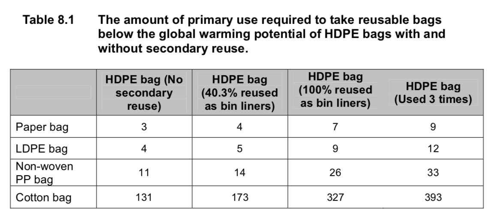

After exhaustive discussion, I've been deputed to inform our readers of Troppo's plastic bag policy. We're in favour of single-use plastic bags. In fact, we're making them compulsory.
I was recently in Book Grocer and was refused a plastic bag, though they were prepared to give me a paper bag which on thinking about it, I've always thought was probably worse for the environment because I'd have assumed it was more energy intensive. The two supermarket chains are phasing out free single-use bags and replacing them with paid multi-use bags. Thing is, they're unlikely to be used often enough to improve the environment. I've no problems in them being charged for – nor do I have problems with them being free – but all other interventions, all other preferences to get back to granma's time with cloth and paper bags, are probably actually bad for the environment. Whodda thunk?
From this British Government "Life cycle assessment of supermarket carrierbags" conducted in 2011.
The paper, LDPE, non-woven PP and cotton bags should be reused at least four, five, 14 and 173 times respectively to ensure that they have lower global warming potential than conventional HDPE carrier bags.
Here's the rest of it in table form:

Here are the study's conclusions regarding individual carrier bags:The following sections outline the results shown in figure 7.1 for each of the bag types considered in this study. The comparisons include the secondary reuse of 40 per cent of lightweight bags (HDPE, HDPE prodegradant and starch-polyester) as bin liners.
8.1.1 Conventional HDPE bag
The conventional HDPE bag had the lowest environmental impacts of the lightweight bags in eight of the nine impact categories. The bag performed well because it was the lightest bag considered. The lifecycle impact of the bag was dictated by raw material extraction and bag production, with the use of Chinese grid electricity significantly affecting the acidification and ecotoxicity of the bag.
8.1.2 HDPE bag with prodegradant additive
The HDPE prodegradant bag had a larger impact than the HDPE bag in all categories considered. Although the bags were very similar, the prodegradant bag weighed slightly more and therefore used more energy during production and distribution.
8.1.3 Starch-polyester bag
The starch-polyester bag had the highest impact in seven of the nine impact categories considered. This was partially due to it weighing approximately twice that of the conventional HDPE bags but also due to the high impacts of raw material production, transport and the generation of methane from landfill.
8.1.4 LDPE bag
The LDPE bag has to be used five times to reduce its GWP to below that of the conventional HPDE bag. When used five times, its impacts were lower in eight of nine of the impact categories. The impact was also substantially lower than the HDPE bag in terms of acidification, aquatic ecotoxicity and photochemical oxidation due to lower shipping distances and the use of grid electricity which is less reliant on coal.
8.1.5 Non-woven PP bag
The non-woven PP bag had to be used fourteen times to reduce its GWP to below that of the conventional bag. With this level of reuse it was also superior to the conventional HDPE bag in five of the nine categories. However, the PP bag was significantly worse than the baseline in terms of terrestrial ecotoxicity due to the emissions associated with use of a heavy fuel oil in an industrial furnace. When recycling was considered global warming potential and abiotic depletion impacts were reduced similar to the HDPE bag.
8.1.6 Paper bag
The paper bag has to be used four or more times to reduce its global warming potential to below that of the conventional HDPE bag, but was significantly worse than the conventional HDPE bag for human toxicity and terrestrial ecotoxicity due to the effect of paper production. However, it is unlikely the paper bag can be regularly reused the required number of times due to its low durability.
8.1.7 Cotton bag
The cotton bag has a greater impact than the conventional HDPE bag in seven of the nine impact categories even when used 173 times (i.e. the number of uses required to reduce the GWP of the cotton bag to that of the conventional HDPE bag with average secondary reuse). The impact was considerably larger in categories such as acidification and aquatic & terrestrial ecotoxicity due to the energy used to produce cotton yarn and the fertilisers used during the growth of the cotton.
Most of the opposition to single-use bags I have seen has been focused around their disposal, and particularly the harm they can cause to wildlife when they enter the ocean.
Which is not to say the overall thrust of the argument presented here is wrong - paper and cotton bags are relatively harmless if they end up in the environment, but their production has other negative impacts; reusable plastic bags aren't going to be eaten by a sea turtle mistaking it for a jellyfish, but they still release plastic micro-particles, and contain much more plastic overall that does need to be disposed of eventually.
Global warming potential, while important, is just one of many factors that need to be considered when identifying what is the 'best' bag to use.
I laughed when I read that people are buying more garbage bags to replace the plastic bags they used to use for kitchen rubbish.
But if you plan to dispose of the plastic bag sensibly and decently, it isn't much of a factor is it?
We've switched to reusable shopping bags fairly painlessly, and mostly manage to take them with us, certainly are getting the acceptable number of uses out of them. But we're educated and motivated and I can't see the mass of consumers doing anything but paying a new tax to increase their emissions.
Also it seems we're running out of bin liners and for the first time I might have to buy them.
Bin liners is one of the sleepers in this, most of the people we know use their one use shopping bags, twice.
And while we ,mostly,remember to take the woven reusable bags for shopping in Canberra, which banned one use bags a few years ago.
You only have to forget to take the reusable bags every now and then and therefore have to buy some more reusable bags , and before long you have a growing pile of reusable bags hanging in the pantry .
I realise I'm unusual, but I use panniers for much of my shopping. Those are ridiculously heavy and not recycleable, but they last 10 years of almost daily use. The rest of the time I use a big plastic bin (attached to a bicycle) that holds approximately one supermarket trolley full of stuff. But then I also wash the rubbish bin, because the plastic bags I might use to line it mostly come from work (where my coworkers are very, very keen on single-use bags. Some even buy zip-lock sandwich bags and throw them out after one use - they don't even wash the manufacturing detritus off the bags before use).
The point about safe disposal is key, and often forgotten. Because my other source of plastic bags is picking them up in my garden, or on the side of the bike path.
You'd fit right in with Herb Feith. Although a vegetarian he used to save chicken bones people didn't eat at his house and chew the marrow out of them. In addition, I never saw him use a tea bag only once, so it sounds like you're in good company.
Moz it could be different in the cities, but in the rivers and the coast near to me the most common plastic waste would be PET bottles ( by far) ,takeaway- instant noodle style food containers, remnants of insulated expanded polystyrene boxes and other fishing and fell off a ship related stuff.
Having done a couple of cleanups in Cooks River (thru the middle of Sydney) the dominant mass is indeed PET bottles and EPS. Hopefully the deposit scheme will help with the bottles. I am filling our green waste bin with them, and will take them to the trade-in place when I have a full load.
But the clean-up also revealed a terrifying number of plastic bags, They shrink to nothing in the wet, but we find them wrapped round things, wedged into things, just slithering round the mud, everywhere. Each one is a gram or so, but also half a square metre or so, and that's the number that kills. Or they break down nice and easily, into little fragments that the bottom of the food chain creatures like to eat.
Like the 6-pack rings, it doesn't have to be most of the waste stream to be a huge problem.
Thing is, we don't have a "what if there were no plastics" comparison point because there's literally nowhere on earth without little fragments of plastic. So we're just guessing at the effect, mostly by dissecting corpses and seeing what's in their guts. Lots of plastic, mostly.
Plastic bags are wonderful it’s just that their disposal negates all the positives. It’s not just bags, all things plastic end up in the ocean and they just don’t break down. I’ve seen massive coils of rope used by trawlermen cast up on south facing Tasmanian beaches.
Essentially it’s we humans that are the problem, one afternoon storm and all the disposables are swept down the storm water system and out to sea. And it’s not always intentional, often stuff just falls off trucks or is blown off building sites.
Plastic is everywhere, it’s so convenient and we need it to secure our lives and we can’t afford to let it go.
Moz Canberra has had a ban on single use plastic bags for over 6 years. Which should be long enough for it to have had a impact on the number of ( at least intact, newish)bags in waterways and lakes. Does anybody have any figures estimates re before and after bans for Canberra?
The environmental issue with thin plastic bags is indeed overwhelmingly about sealife; turtles and large birds in particular. Nicholas is undoubtedly correct that they are otherwise less problematic than the alternatives (including reusable plastic bags that in fact are rarely, based on the Canberra experience, reused). So I'd only ban 'em near the coast.
DD
Do you know of any studies re Canberra and reusable bags?
The only study I’ve come across was based on figures supplied by just three fairly small beer Canberra IGA stores.
BTW if ,only ban them “near the coast” means banning them in all coastal catchments then it’s effectively a ban for most of our population.
Well f**k me, you've solved it! If everyone disposes of their waste in a conscientious manner, our plastic pollution problems are over!
Excuse the sarcasm, but the issue is that a lot of people don't bother to dispose of them sensibly and decently, which leads to the argument for banning them entirely - if you're not providing free 'single-use' plastic bags, then they can't be disposed of by careless people. If you only provide paper bags, then the people who drop them in the street are causing a lot less harm than if it were plastic. If your only option is to buy a reusable bag for a dollar, you're going to remember to bring your reusable bag.
Again, I'm not saying the overall thrust of the argument is wrong, I'm just saying that the evidence you have marshalled isn't actually addressing the primary issue that plastic bag bans or charges are trying to solve.
I believe the ACT are currently doing a review of it.
Mind you, I long ago lost faith in reviews that are done as a response to political pressures, as this one is - they are typically made to justify a decision already secretly made (ie whether or not to continue the program), rather than to truly evaluate the program. It's policy-based evidence rather than evidence-based policy.
A single anecdata point from Canberra is that my partner and I haven't used the "reusable" bags barely at all, and avoid them since they don't seem to withstand much actual reuse. We do have an ever expanding collection of those woven PP(?) bags despite never purchasing one ourselves, they seem to just accumulate somehow. The woven bags seem fairly durable, and most have lasted several years of weekly reuse plus the occasional trip through the washing machine if they get scungy. Backpacks and bike panniers also make an appearance on smaller shopping excursions.
The bin liner one is tricky and I admit we purchase them, though prefer the supposedly degradable or starch based bags. As a consumer it seems pretty much impossible to judge the actual merits of the various options across the many "sustainability" criteria you can apply, and I don't know what else we could substitute for bin liners? Similarly to Moz we reuse what plastic bags we can't avoid acquiring until soiled/damaged beyond reuse, so it's pretty much just unavoidable packaging and very small amounts of uncompostable food waste going into our bin. Without letting it all tumble about loose there doesn't seem to be an obvious alternative.
AFAICT we're toward the more extreme end of reuse but not unusual for where we are in Canberra.
All fair points.
Presumably the heavier plastic bags are less economical for the shopping centers to just give away, so overall people will tend towards reuse.
The light plastic bags actually make fairly poor bin liners - often having holes and releasing their contents before they make it to landfill. At least purchased bin bags will serve their intended purpose better.
we're into cotton bags and we use them often, though whether we use them 370 times before they fall apart? Maybe not.
However, the study you refer to is about relative energy use, which is a tiny bit of the environmental impact. Local pollution and ocean pollution are far more important IMO and in that game, cotton beats plastic anytime because it degrades easily and you're not going to drop a large cotton bag somewhere willy-nilly.
I suspect that the explosion in useless packaging is probably more harmful than the bags. And, ironically, 'organic food' often has a lot of plastic around it because it's so dirty. Add that to the large proportion of 'organic' food thrown away before it even makes the shop, and you wonder what the argument for it is.....
DD Going of that report the ACT is focussing on measuring the amount of bags going into landfill, but surely the real concern is the number of bags going into waterways etc. Surely they could commission somebody from ANU to research what’s the story re bags in waterways and lakes ? Canberra’s fairly closed system drainage patterns should( I think) make that research not too hard to do, after all much of their storm water ends up in a fairly small number of lakes and ponds many of which have rubbish filter traps at water entry points.
That kinda illustrates what I meant in the second para. Set the terms of reference of a review and you set the findings.
Oh Paul, don't get me on to the idiocies of 'organic food'. Done on a large scale it would seriously degrade both human health and the environment. Though I do concede it often tastes better.
Agree
John, the National Litter Index, published by Keep Australia Beautiful, monitors littering, including plastic bags, across various jurisdictions. Although it doesn't specifically monitor litter in waterways, it acts as a general proxy measure for the quantities of different categories of item getting into the environment, although I understand there is some debate about the methodology. According to NLI data, numbers of plastic bags in litter fell substantially in the ACT and Tasmania immediately after the bans came into force in those jurisdictions, and has stayed at relatively low levels, although it appears to have increased slightly in the last year or two (which is presumably why those jurisdictions are reviewing their policies). The reduction was less dramatic in SA, and in the NT appears to have had no effect.
Tim On reflection I’d be surprised if shopping bags from, supermarkets were ever a big source of litter in waterways and the like. After all most of us go to the supermarket buy the weeks groceries etc put them in the car, or catch a bus, go home unload the shopping in the kitchen and either store the bags for use as bin liners etc or chuck them in the bin -destined for landfill. Expect that it would be bags for things like takeaway food that would be more likely to be a problem